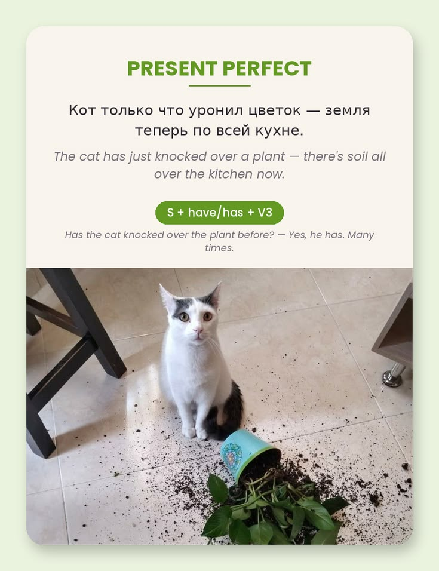
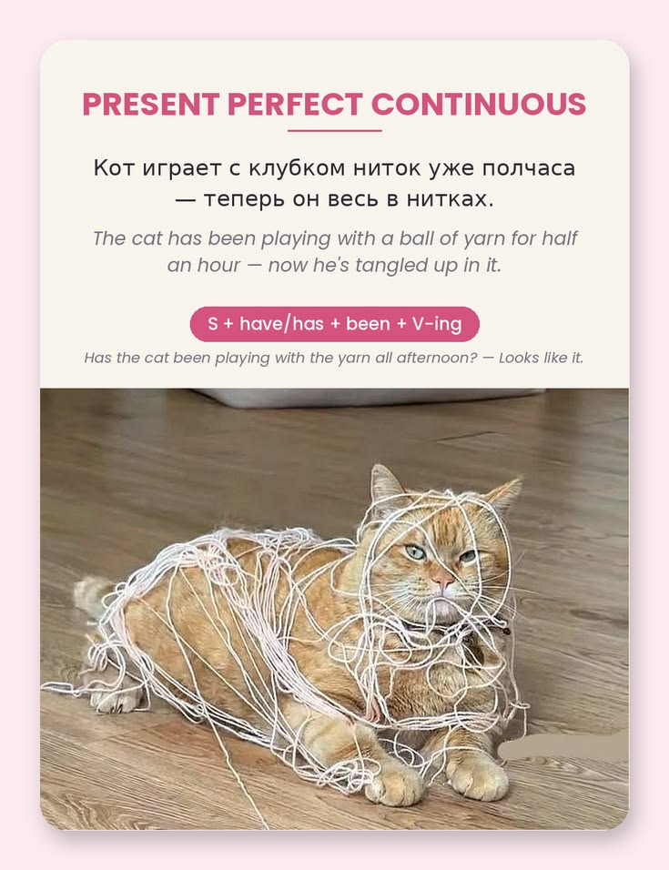

Identity &
personality
A little vocabulary, a grammar refresh and a listening challenge. Take your time, trust your instincts and check your progress as you go.
Personality adjectives
Choose the adjective that best completes each sentence. Then use the word bank to complete the conversation.
“Be yourself; everyone else is already taken.”
1A · Choose the correct word
6 questions1B · Complete the conversation
8 gapsWord bank: adventurous · ambitious · argumentative · cheerful · curious · outgoing · rebellious · stubborn
Present perfect
A quick visual reminder before you dive into the exercises.


Present perfect continuous: have / has + been + verb-ing. Use it for an activity that started in the past and continues now, or has a visible present result. Focus on duration or activity.
3A · Choose the correct form
6 questionsProgress is a process.
Some things are finished; others have been happening for a while. Notice the difference in meaning.
3B · Complete the blog post
6 gapsUse the correct form of the verbs in brackets.
Regular followers of my blog will know that I , who hates conflict and walks away from any kind of argument.
Recently, though, I
What makes you, you?
Listen to the interview about identity. You can pause, replay and listen again as many times as you need.
5A · Put the topics in order
5 topicsListen and number the topics in the order they are discussed.
- Other factors that influence our identity
- How to find yourself
- The elements that form our identity
- How we develop our sense of self
- The importance of self-identity
Self-check: make sure you have used each number from 1 to 5 exactly once. Replay the interview to verify the sequence.
5B · Complete the sentences
5 gapsWrite no more than three words from the recording in each gap.
1. Identity is a combination of your , your likes and dislikes, your moral code and what motivates you.
2. Without a clear sense of self, it can be difficult to .
3. Parents provide for how their children should behave.
4. Your identity isn't — it develops over the course of your life.
5. Our relationships and experiences our sense of self.
Listening strategy
First listen for the general idea. On the second listen, focus on the words immediately before and after each gap. Keep your answers short and use the speaker's exact wording.
5C · Final advice
Your own wordsListen to the speaker's final advice again and write the sentence you hear.
Replay the final part of the recording and compare your sentence with what you hear.
good work!
keep going!
You showed up, practised and made progress. That's what counts.